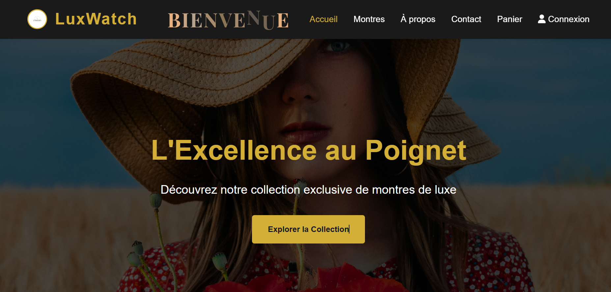

Hi, I’m Fatima Ezzahrae Aabdi, a passionate Full Stack Web Developer.
I’m a motivated, curious, and creative developer who loves building dynamic and visually appealing websites that offer great user experiences. With a strong interest in both front-end design and back-end development, I enjoy bringing ideas to life through clean code, modern technologies, and thoughtful design. I’m always eager to learn, improve my skills, and take on new challenges that push me to grow as a developer. For me, web development is not just about coding — it’s about creating digital experiences that connect people and make a real impact.
À propos de moi
I’m a passionate Full Stack Web Developer dedicated to crafting modern, elegant, and intuitive digital experiences. I love designing clean, user-centered interfaces and developing efficient back-end systems that bring ideas to life. Driven by curiosity and a constant desire to learn, I continuously explore new technologies and refine my skills in both design and programming. My goal is to create meaningful web solutions that combine performance, creativity, and seamless user experience.
Education & expérience
Sept 2025 - Present
"I’m currently doing an internship at ARK-X."
2023 - 2025
Specialized Technician Diploma in Digital Development – Full Stack Web Option at OFPPT.
Feb 2025
End-of-training internship: Development of a web application for visitor management.
2022 -2023
Baccalaureate in Physical Sciences – French option.
Compétences
Projets récents
Projet 1
une plateforme de vente en ligne spécialisée dans les montres de luxe. L'analyse porte sur la structure du code, les fonctionnalités implémentées, les technologies utilisées, l'architecture du projet et l'expérience utilisateur.
Projet 2

une application web permettant la gestion efficace des visiteurs dans un établissement, incluant le suivi des visites, la gestion des services et le traitement des problèmes signalés.
Projet 3
Application web responsive pour la gestion des tâches.
Contact
Restons en contact ✨
Je suis ouverte aux opportunités de collaboration, de stage ou de projet freelance. N’hésite pas à me contacter via mes coordonnées ci-dessous.